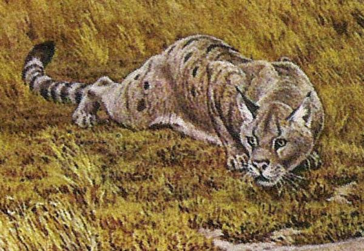
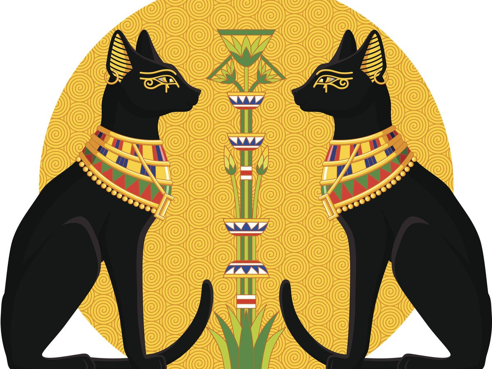
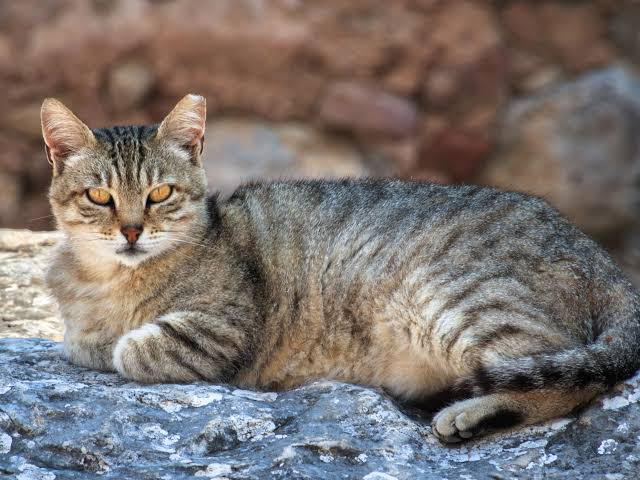
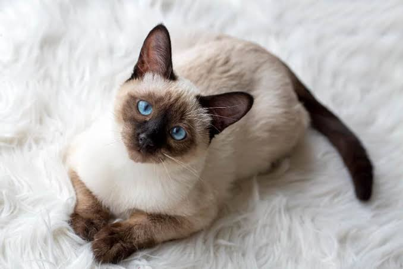
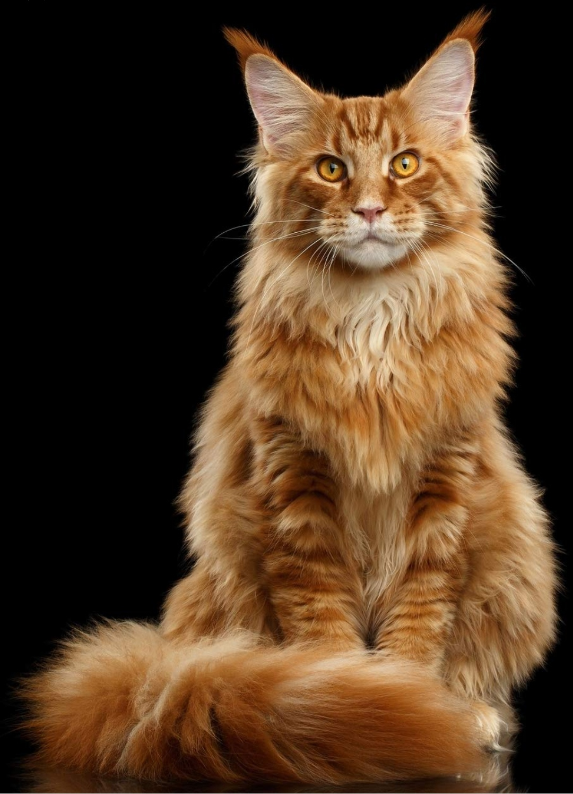
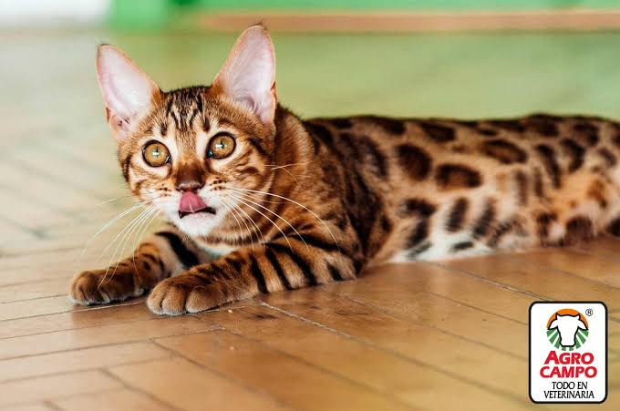
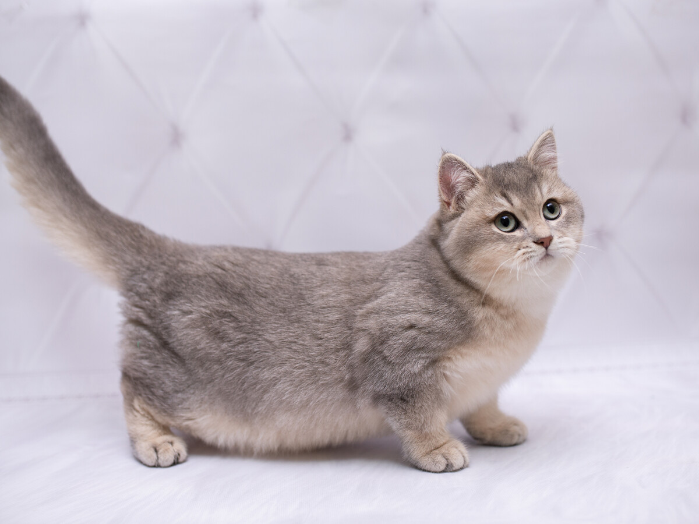

Historia y origen:
A veces tendemos a pensar que fuimos los seres humanos quienes domesticamos a los gatos, pero
si lo analizamos bien, la realidad es que ellos eligieron convivir con nosotros. Esta historia
comenzó hace más de diez mil años en el Antiguo Cercano Oriente, cuando los felinos salvajes se
percataron de que los asentamientos agrícolas atraían una gran cantidad de roedores. Lo que
inició como una simple alianza por conveniencia mutua (donde ellos conseguían alimento fácil
y los humanos protegían sus cosechas) rápidamente se transformó en un vínculo afectivo profundo .
Esta fascinación alcanzó su punto máximo en el Antiguo Egipto, donde los gatos pasaron de ser
cazadores a considerarse seres sagrados y guardianes espirituales del hogar, al punto de que
dañar a uno era visto como una falta gravísima. Al reflexionar sobre este recorrido histórico,
resulta increíble pensar cómo esos pequeños felinos del desierto lograron conservar su esencia
independiente mientras se ganaban un lugar en nuestras familias. Hoy en día, miles de años
después, seguimos compartiendo nuestro espacio con ellos y sintiendo esa misma conexión
misteriosa y especial cada vez que se acomodan a nuestro lado.



Comportamiento y comunicación:
Los gatos se comunican usando un lenguaje corporal sutil y variados maullidos para expresar
lo que sienten. Aprender a leer la postura de sus orejas, cola y mirada nos ayuda a
entenderlos mejor.
En el siguiente video puedes ver cómo interpretamos sus señales máscomunes en el día a día:
Razas más comunes de gatos:
Razas |
¿Cómo se ve? |
Caracteristicas |
Comportamiento |
|---|---|---|---|
| Siamés |  |
Famoso por sus impactantes ojos azules y su pelaje claro con extremidades oscuras. Es originario de Tailandia, donde se le consideraba un felino real y sagrado. |
Muy vocal y apegado. Les gusta "conversar" maullando, siguen a las personas por la casa y no toleran la soledad. |
| Maine Coon |  |
Es una de las razas más grandes, conocida por sus orejas estilo lince y su enorme cola afelpada. |
Amigable y juguetón. Disfrutan jugar con agua, traen objetos con la boca y se llevan muy bien con familias. |
| Persa |  |
Distinguido por su carita plana, nariz pequeña y abundante pelo de aspecto esponjoso de la antigua Persia. |
Calmado y observador. Pasan el día descansando en lugares cómodos y prefieren entornos tranquilos. |
| Bengalí |  |
Destaca por su manto atigrado brillante con manchas de leopardo. Nació del cruce con un gato salvaje. |
Calmado y observador. Pasan el día descansando en lugares cómodos y prefieren entornos tranquilos. |
| munchkin |  |
Su rasgo más fascinante son sus patas súper cortas fruto de una mutación natural en Estados Unidos |
Alegre y acaparador. Se sientan sobre sus patas traseras para curiosear y suelen esconder objetos pequeños. |
Cuidados básicos que se deben tener con los gatos:
- Alimentación balanceada y agua fresca: Ofrecer alimento de buena calidad adaptado
a su edad (cachorro, adulto o senior) y mantener siempre agua limpia a su disposición,
preferiblemente en fuentes con agua en movimiento. - Higiene y mantenimiento del arenero: Ubicar la caja de arena en un lugar tranquilo
y ventilado. Es indispensable retirar los desechos diariamente y hacer un cambio total
de arena semanalmente para prevenir enfermedades. - Enriquecimiento ambiental y rascadores: Proporcionar rascadores verticales para el
cuidado de sus garras, zonas elevadas donde puedan trepar y juguetes interactivos
para estimular su instinto cazador. - Cuidado del pelaje y salud oral: Cepillar su pelo periódicamente según la raza
para evitar la acumulación de bolas de pelo en el estómago y revisar frecuentemente
sus dientes. - Atención veterinaria y medicina preventiva: Llevar al gato al veterinario al
menos una vez al año para chequeos generales, mantener al día su esquema de
vacunación y desparasitación, y considerar la esterilización a temprana edad.
Para profundizar más en el tema puedes visitar: Guía completa de cuidados que necesita un gato
Les dejaré este vídeo para que conozcan algunos de los gatos que he tenido:
Si quieres hablar de tu amor por los gatos, mándame un mensaje: